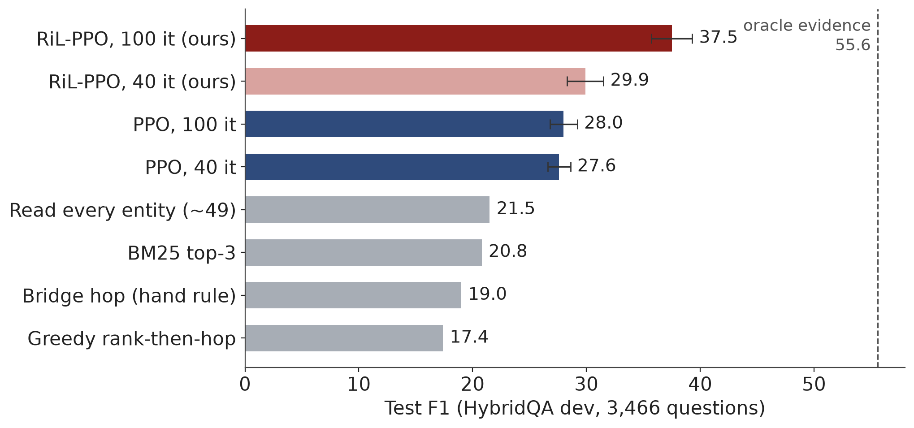
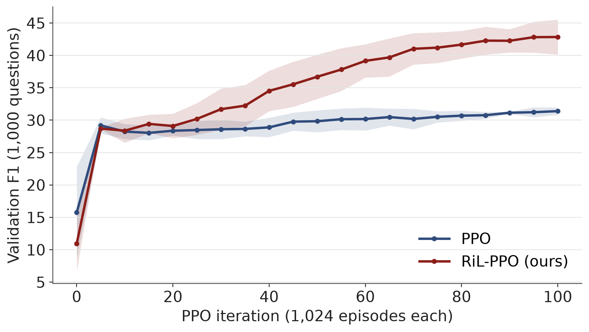
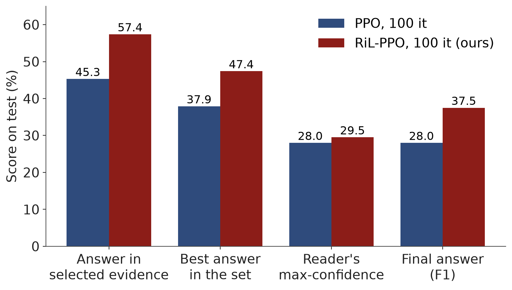
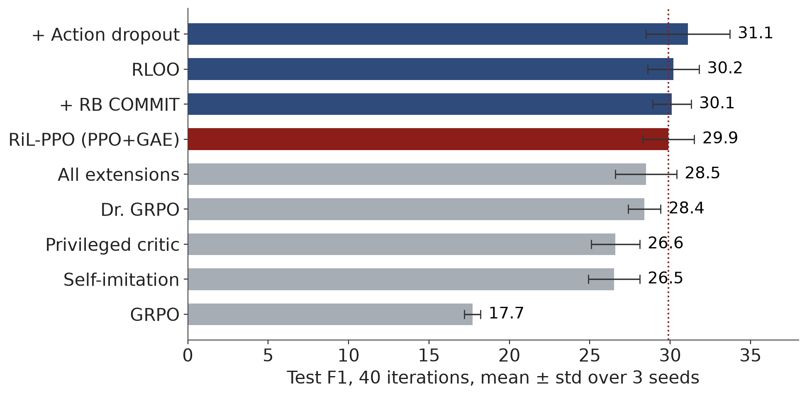

Contributions of this project are marked ours.
Methods taken from prior work carry a reference number, e.g. PPO [2].
All numbers are means over 3 training seeds on the full HybridQA dev set (3,466 questions), unless stated otherwise.
Question: “The driver who finished in position 4 in the 2004 United States Grand Prix was of what nationality?” Answer: British
| Pos | No | Driver | Constructor | Time |
|---|---|---|---|---|
| 1 | 2 | Rubens Barrichello | Ferrari | 1:10.223 |
| 2 | 1 | Michael Schumacher | Ferrari | 1:10.400 |
| 3 | 10 | Takuma Sato | BAR - Honda | 1:10.601 |
| 4 | 9 | Jenson Button | BAR - Honda | 1:10.820 |
| 5 | 3 | Juan Pablo Montoya | Williams - BMW | 1:11.062 |
Figure 1. A HybridQA example (dev question #2). Hop 1: find the row with Pos = 4 in the table. Hop 2: follow the hyperlink in the Driver cell to the passage. The answer is only in the passage; the passage is only found through the table.
Given a question \(q\) and the entities \(\mathcal V\) of its table (rows and linked passages), choose an ordered set of at most \(H = 3\) entities, and decide when to stop, so that a fixed extractive reader answers \(q\) correctly from the chosen evidence.
Evidence is chosen by a fixed rule: a greedy classifier (HYBRIDER [1]), embedding similarity (TableRAG [23]), or an LLM prompt (Chain-of-Table [22]). None learns the choice from answer quality.
The only RL controller for table + text QA [18] chose between whole tables and texts and did no better than a fixed rule.
Learn which entity to read next and when to stop directly from the reader's answer F1, with reinforcement learning.
| Train | Validation | Test (dev) | |
|---|---|---|---|
| Questions | 5,000 | 1,000 | 3,466 |
| Distinct tables | 1,000 | 201 | 3,053 |
| Rows per table | 15.8 | 16.4 | 15.9 |
| Linked passages per table | 33.2 | 33.8 | 33.2 |
| Entities (nodes) per question | 49.0 | 50.2 | 49.0 |
| Candidates at the first step | 20.8 | 21.4 | 20.9 |
| Exactly one gold path (%) | 54.9 | 55.6 | 55.9 |
| Answer string in some entity (%) | 99.6 | 99.7 | 97.1 |
Table 1. Statistics of the entity graphs we build. Train and validation use disjoint training tables; test is the full official dev set (its answers are public; the official test answers are not).
Figure 2. Pipeline at inference and training time. The encoder and reader are frozen; only the policy \(\pi_\theta\) (and, during training, its critic) is learned. Up to \(H = 3\) select–read cycles run before STOP. Red parts are this project's contributions; the black loop is the baseline system.
where
\(q\): question; \(\mathcal V\): all entities of its graph; \(E_t\): entities selected after \(t\) steps; \(e_t^{\text{last}}\): the last one selected.
\(H = 3\): horizon (maximum number of entities).
\(\mathcal R\): all rows; \(\mathcal P_5(q)\): the 5 passages most similar to \(q\); \(\mathcal N(E_t)\): passages linked from selected rows. At most \(K = 48\) candidates.
\(c = 0.02\): cost per entity read; \(T\): last step of the episode.
\(\hat y\): the answer the reader extracts from the chosen evidence; \(y^\star\): gold answer; F1: token-overlap F1 between them.
\(\Phi\): shaping potential; \(\mathcal G\): gold evidence entities; \(\kappa = 0.5\); \(\gamma = 1\): discount.
Shaping of the form \(\gamma\Phi(s') - \Phi(s)\) leaves the optimal policy unchanged [4]: with \(\Phi(s_T)=0\) the terms sum to \(-\Phi(s_0)=0\) over an episode.
where
\(f_s, f_c, f_v\): two-layer MLPs (hidden size 256, ReLU).
\(\mathbf e_a\): frozen 384-d embedding of entity \(a\); \(\mathbf x_a\): 14 hand-made features (BM25 score, cosine to \(q\), linked to last hop, number match, …).
\(h \odot g_a\): element-wise product; \(\ell(a)\): score (logit) of candidate \(a\). STOP has its own head on \(h\) and 8 scalar state features.
\(\pi_\theta\): policy with parameters \(\theta\); invalid actions are masked (logit \(-10^9\)), not penalised.
\(V_\phi\): critic (value function) with separate parameters \(\phi\); primes denote its own encoders.
The number of candidates changes per question and per step. Scoring each candidate with the same network gives one logit per candidate, whatever their number.
Size: 0.97 M parameters (actor).
where \(\hat A_t\): advantage (how much better the action was than the critic expected), GAE [3] with \(\lambda = 0.95\); \(\rho_t\): probability ratio between the new and the data-collecting policy; \(\epsilon = 0.2\): clip range; \(\mathcal H\): entropy, \(c_H = 0.01\); \(\hat G_t\): return target.
| Setting | Value |
|---|---|
| Episodes per iteration | 1,024 |
| Iterations | 40 and 100 |
| Epochs × minibatch | 4 × 256 |
| Learning rate (actor / critic) | 3·10⁻⁴ / 10⁻³ (Adam) |
| Early stop of an update | KL > 0.03 |
| Checkpoint selection | best validation F1 (every 5 it) |
Table 2. PPO [2] hyper-parameters, identical for all PPO runs.
| PPO, 40 iterations | Score |
|---|---|
| Answer string inside the selected evidence | 46.1 |
| F1 if the best span among selected entities were chosen | 38.7 |
| F1 actually obtained (reader's max-confidence span) | 27.6 |
Table 3. Error decomposition of the baseline on test. About 11 F1 points are lost after the evidence is already selected.
The policy never sees what the reader found in hop 1. In Figure 1 it cannot know that the row's answer is “Jenson Button”, so it cannot follow that name: the essence of a multi-hop chain.
The reader reads every selected entity and its most confident span wins. The reader is most confident on the table row (“Jenson Button”), which is the wrong type of answer for a “nationality” question.
Both leaks are about the reader being outside the decision loop. This motivates our method.
After every hop the frozen reader reads the newly chosen entity; its span becomes the bridge \(b_t\):
Each candidate \(a\) gets bridge features appended to \(\mathbf x_a\) in (5):
where \(R(q, e)\): span the reader extracts from entity \(e\) for question \(q\); \(b\) ranges over informative bridges found so far; \(b \sqsubseteq x\): normalised \(b\) occurs in \(x\); \(b \approx \mathrm{title}(a)\): \(b\) matches the passage title.
The state also gains 9 scalars: reader confidence of the last hop, question type (who / when / number / where / other), and a COMMIT-phase flag.
What is new. The reader is used inside the episode as an observation, not only as the reward. Prior RL selectors for retrieval (e.g. s3 [19]) and for tables [18, 20, 21] observe only the retrieved text.
Cost. No extra reads: the reward needs these reads anyway, and they are cached.
After STOP (if \(|E_T| > 1\)) the policy takes one more action: which selected entity provides the final answer.
where \(\tilde\sigma(e)\): the reader's confidence score for its span in \(e\), clipped to \([-20, 20]\) and divided by 5; \(\beta\): learned scalar, initialised to 5; \(c_\theta\): learned correction head on the same \(h, g_e\) as (6), initialised near 0; \(e^\star\): the committed entity.
Commit-phase features: does the span repeat question words, is it numeric, its length, does it appear in the other evidence.
At initialisation \(\beta\tilde\sigma(e)\) equals the raw reader score and \(c_\theta \approx 0\), so COMMIT starts exactly at the max-confidence rule. RL only learns when to overrule the reader.
The extra step changes episode length. We define \(\Phi\) on the commit state as the potential of the final selection and set \(\Phi(s_T)=0\) after COMMIT, so (3)–(4) still telescope to 0 and [4] still applies.
In Figure 1: reader confidences are “Jenson Button” 17.6, “Brazilian” 1.0, “British” −7.2. Max-confidence answers “Jenson Button” (F1 = 0). COMMIT picks “British” (p = 0.54): correct.
\(\bar y\): answer after lower-casing and removing punctuation and articles; \(P, R\): token precision and recall of \(\hat y\) against \(y^\star\). Both are averaged over questions, in %.

Figure 3. Test F1 on 3,466 HybridQA dev questions. Error bars: std over 3 seeds (fixed rules are deterministic). Dashed line: reader given the oracle gold evidence.
| Selector | EM | F1 |
|---|---|---|
| BM25 top-3 | 15.9 | 20.8 |
| PPO, 100 it | 22.8 | 28.0 |
| RiL-PPO, 100 it (ours) | 31.0 | 37.5 |
| Oracle evidence | 48.4 | 55.6 |
Table 4. Main comparison (mean of 3 seeds).

Figure 4. Validation F1 (1,000 questions from unseen training tables) during training, mean over 3 seeds; shaded band: ± 1 std.

Figure 5. Error decomposition on test, 100 iterations. “Best answer in the set”: F1 if an oracle chose among the selected entities. “Reader's max-confidence”: F1 of the reader's own rule on the same evidence.
| 40 iterations | F1 | Δ |
|---|---|---|
| PPO | 27.6 | – |
| + bridge feedback only | 28.7 | +1.1 |
| + COMMIT only | 29.0 | +1.4 |
| + both (RiL-PPO) | 29.9 | +2.3 |
Table 5. Ablation. All differences to PPO and between the full model and each single component: p ≤ 0.008.

Figure 6. Test F1 after 40 iterations, ± std over 3 seeds. Dotted line: RiL-PPO trained with PPO + GAE. Blue: better than RiL-PPO; grey: worse.
| Selector | Unseen tables | MiniLM reader | RoBERTa reader |
|---|---|---|---|
| BM25 top-3 | 20.6 | 20.5 | 21.1 |
| PPO | 27.8 | 27.7 | 28.5 |
| RiL-PPO (ours) | 37.4 | 30.8 | 32.0 |
| Oracle evidence | 55.8 | 56.6 | 61.4 |
Table 6. F1. Unseen tables: test questions whose table never appears in training (3,163 questions; 100-iteration models). Reader swap: first 1,000 test questions, 40-iteration models trained with MiniLM, evaluated with RoBERTa-base-SQuAD2 [16] without retraining.
| Step | Policy decision | π | Reader output (fed back) | Why (features) |
|---|---|---|---|---|
| 1 | Row “Pos is 4 ; … Driver is Jenson Button” | 0.91 | “Jenson Button” | no reader output yet: question–entity features only |
| 2 | Passage Jenson Button | 0.86 | “British” | bridge = title, linked to last hop |
| 3 | Passage Rubens Barrichello | 0.75 | “Brazilian” | STOP had only 0.05; horizon reached |
| COMMIT | Answer from Jenson Button passage | 0.54 | “British”: EM 1, F1 1.0 (max-confidence would answer “Jenson Button”) | |
Table 7. Output of scripts/eval/demo.py --idx 2 on test question #2 (Figure 1), 100-iteration RiL-PPO, seed 0. π: probability of the chosen action. 3 of 56 entities read; about 3 s per question with the reader running live, 0.2 s with cached reads.
Step 3 reads an unneeded passage: the policy rarely stops early. Here COMMIT ignored it, but on other questions the extra span can win. Learning to stop is the main open issue.
[1] W. Chen, H. Zha, Z. Chen, W. Xiong, H. Wang, W. Y. Wang. HybridQA: A dataset of multi-hop question answering over tabular and textual data. Findings of EMNLP, 2020. Data: github.com/wenhuchen/HybridQA
[2] J. Schulman, F. Wolski, P. Dhariwal, A. Radford, O. Klimov. Proximal policy optimization algorithms. arXiv:1707.06347, 2017.
[3] J. Schulman, P. Moritz, S. Levine, M. I. Jordan, P. Abbeel. High-dimensional continuous control using generalized advantage estimation. ICLR, 2016.
[4] A. Y. Ng, D. Harada, S. Russell. Policy invariance under reward transformations. ICML, 1999.
[5] R. J. Williams. Simple statistical gradient-following algorithms for connectionist RL. Machine Learning, 1992.
[6] Z. Shao et al. DeepSeekMath: pushing the limits of mathematical reasoning in open language models (GRPO). arXiv:2402.03300, 2024.
[7] A. Ahmadian et al. Back to basics: revisiting REINFORCE-style optimization for learning from human feedback in LLMs (RLOO). ACL, 2024.
[8] Z. Liu et al. Understanding R1-Zero-like training: a critical perspective (Dr. GRPO). COLM, 2025.
[9] X. V. Lin, R. Socher, C. Xiong. Multi-hop knowledge graph reasoning with reward shaping (action dropout). EMNLP, 2018.
[10] J. Oh, Y. Guo, S. Singh, H. Lee. Self-imitation learning. ICML, 2018.
[11] L. Pinto, M. Andrychowicz, P. Welinder, W. Zaremba, P. Abbeel. Asymmetric actor critic for image-based robot learning. RSS, 2018.
[12] X. Wang et al. Self-consistency improves chain of thought reasoning in language models. ICLR, 2023.
[13] N. Reimers, I. Gurevych. Sentence-BERT. EMNLP, 2019. Model: sentence-transformers/all-MiniLM-L6-v2.
[14] W. Wang et al. MiniLM: deep self-attention distillation for task-agnostic compression of pre-trained transformers. NeurIPS, 2020. Model: deepset/minilm-uncased-squad2.
[15] P. Rajpurkar, R. Jia, P. Liang. Know what you don't know: unanswerable questions for SQuAD. ACL, 2018.
[16] Y. Liu et al. RoBERTa: a robustly optimized BERT pretraining approach. arXiv:1907.11692, 2019. Model: deepset/roberta-base-squad2.
[17] S. Robertson, H. Zaragoza. The probabilistic relevance framework: BM25 and beyond. Found. Trends IR, 2009.
[18] M. M. José et al. Question answering with texts and tables through deep reinforcement learning. BRACIS, 2024.
[19] P. Jiang et al. s3: You don't need that much data to train a search agent via RL. EMNLP, 2025.
[20] Y. Lee et al. Learning to reduce: optimal representations of structured data in prompting LLMs. arXiv:2402.14195, 2024.
[21] Z. Wu et al. Table-R1: region-based reinforcement learning for table understanding. arXiv:2505.12415, 2025.
[22] Z. Wang et al. Chain-of-Table: evolving tables in the reasoning chain for table understanding. ICLR, 2024.
[23] S.-A. Chen et al. TableRAG: million-token table understanding with language models. NeurIPS, 2024.
[24] O. Vinyals, M. Fortunato, N. Jaitly. Pointer networks. NeurIPS, 2015.
Code: our implementation in PyTorch and Hugging Face Transformers (repository mhtrl); no external RL library was used.
RiL-PPO: 37.5 F1 / 31.0 EM on HybridQA dev, +9.5 F1 over PPO with the same budget.
Live demo: python scripts/eval/demo.py --idx 2 --fresh
Backup slides follow: features, hyper-parameters, extension definitions, significance tests, training diagnostics, shaping proof, code structure.
| Candidate feature (14, baseline) | Meaning |
|---|---|
| is_row, is_passage | entity type |
| cos(q, a), bm25_norm | similarity to the question |
| rank_in_type, global_topk | rank among rows / passages |
| linked_to_evidence, linked_to_last | graph link to selected entities |
| row_position, degree | position in table, number of links |
| q_overlap, q_novel_overlap | question words covered (new ones) |
| number_match, max_cos_to_evidence | shared number, redundancy |
Table B1. Baseline candidate features; plus 8 state scalars (step, rows / passages selected, question coverage, …).
| Added by RiL-PPO (ours) | Phase |
|---|---|
| bridge_in_text, bridge_is_title, last_bridge_in_text, bridge_in_row | select |
| commit_conf, commit_score (\(\tilde\sigma\)), commit_is_maxconf | commit |
| commit_span_in_q, commit_agreement | commit |
| commit_span_numeric, commit_span_len | commit |
| State: max_conf, last_conf, last_span_informative | both |
| State: question type (who / when / number / where / other) | both |
| State: commit_phase flag | both |
Table B2. 11 candidate features and 9 state scalars added by our method. A span is “informative” if it is not empty and not just question words.
RLOO [7]: \(G = 4\) episodes per question, rewards \(R_1..R_G\):
GRPO [6] and Dr. GRPO [8]:
Rao-Blackwellised COMMIT (ours): instead of the sampled commit \(e^\star\), use the exact expected answer reward
Action dropout [9]: during sampling each entity candidate is hidden with probability 0.1 (never STOP or COMMIT options); the stored log-probability is that of the full policy, so the PPO ratio (10) stays consistent.
Self-imitation [10]: replay buffer of past episodes; extra loss \(-\log \pi_\theta(a \mid s)\,\max(G - V(s), 0)\).
Privileged critic [11]: \(V_\phi\) also sees 6 training-only inputs (gold-evidence recall, answer present, …); the actor does not.
EMA: Polyak average \(\bar\theta \leftarrow 0.9\,\bar\theta + 0.1\,\theta\); kept only if better on validation (never was).
Self-consistency [12]: greedy episode + 7 samples at temperature 0.7; majority vote over normalised answers.
| A − B | ΔF1 | 95% CI | p (one-sided) |
|---|---|---|---|
| RiL-PPO 100 it − PPO 100 it | +9.55 | [8.56, 10.58] | < 0.001 |
| RiL-PPO 100 it − BM25 top-3 | +16.74 | [15.36, 18.13] | < 0.001 |
| RiL-PPO 40 it − PPO 40 it | +2.26 | [1.48, 3.04] | < 0.001 |
| bridge feedback only − PPO | +1.09 | [0.39, 1.79] | 0.002 |
| COMMIT only − PPO | +1.41 | [0.67, 2.17] | < 0.001 |
| RiL-PPO − bridge feedback only | +1.17 | [0.43, 1.90] | 0.001 |
| RiL-PPO − COMMIT only | +0.85 | [0.17, 1.53] | 0.008 |
| + action dropout − RiL-PPO | +1.24 | [0.58, 1.89] | < 0.001 |
| RLOO − RiL-PPO (PPO) | +0.34 | [−0.35, 1.01] | 0.17 |
| Dr. GRPO − GRPO | +10.66 | [9.66, 11.69] | < 0.001 |
Table B3. Paired bootstrap over the 3,466 test questions (10,000 resamples), each method's per-question F1 averaged over its 3 seeds.
| Method | Train answer F1 | Critic expl. var. | KL / update | Clip fraction | Entropy | Entities |
|---|---|---|---|---|---|---|
| PPO, 40 it | 0.326 | 0.47 | 0.0028 | 0.033 | 1.27 | 2.60 |
| RiL-PPO, 40 it | 0.344 | 0.48 | 0.0028 | 0.034 | 1.14 | 2.71 |
| PPO, 100 it | 0.441 | 0.84 | 0.0014 | 0.016 | 0.45 | 2.26 |
| RiL-PPO, 100 it | 0.533 | 0.75 | 0.0015 | 0.017 | 0.45 | 2.64 |
| Privileged critic, 40 it | 0.332 | 0.61 | 0.0029 | 0.034 | 1.17 | 2.49 |
| GRPO, 40 it | 0.220 | – | 0.0021 | 0.024 | 0.55 | 1.03 |
Table B4. Training-log statistics, mean over the last 10 iterations and 3 seeds. Both 100-iteration runs end at the same entropy and KL; the difference is in what the policy can observe, not in how stably it was optimised. GRPO: 46% of groups had zero advantage, and it selects ~1 entity.
Shaped return of an episode of length \(T\) with \(\gamma = 1\):
because \(E_0 = \emptyset\) gives \(\Phi(s_0) = 0\), and we define \(\Phi(s_T) = 0\). Hence for every policy
so shaping only changes when credit arrives, not which policy is best [4].
An episode now has \(|E_T|\) select steps, an optional explicit STOP step and a COMMIT step. We assign the potential of state \(k\) as \(\Phi(E_{\min(k, |E_T|)})\), i.e. STOP and COMMIT states carry the potential of the final selection, and the absorbing state after COMMIT has potential 0.
The sum in (B4) still telescopes to 0, so (B5) holds unchanged. The implementation asserts that the number of rewards equals the number of recorded steps.
| File (src/mhtrl/) | Content |
|---|---|
| data.py | HybridQA → entity graphs, gold paths |
| encoder.py, reader.py | frozen MiniLM encoder; frozen reader with a per-(question, entity) cache |
| env.py | MDP: candidates, features, bridge features, COMMIT phase, rewards (3)–(4) |
| policy.py | pointer actor (5)–(7), commit head (15), critic (8) |
| rollout.py | batched episodes, evaluation, self-consistency |
| rl/algos.py | PPO, GRPO, RLOO, REINFORCE and all extensions |
| scripts/train/run_loop_suite.py | resumable driver for all 48 runs |
| scripts/eval/demo.py | inference on one question (Table 7) |
| tests/test_core.py | 17 unit tests (CPU and CUDA) |
configs/; every result in this talk is regenerated by scripts/analysis/loop_report.py.